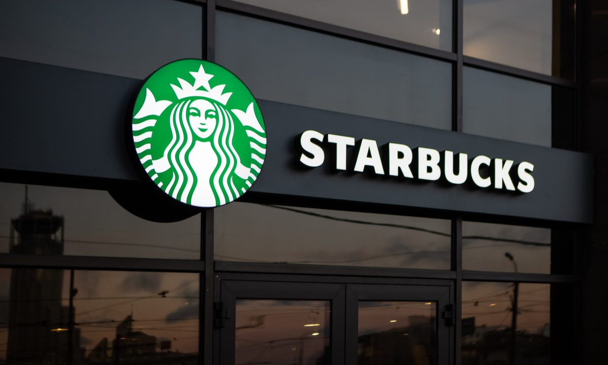

My Top 3 Starbucks Drinks
Eileen Vincent Bose
Starbucks is one of my favorite coffee places, and I started to enjoy it more after I came to MSU during my freshman year. Due to the 1855 Place being pretty close to Wilson Hall, my friends and I used to go there almost every other week. It was nice to have Starbucks considered as a “combo” because we just needed to scan our ID and we could choose a drink and something to eat. I was not much of a big coffee drinker, but since Starbucks is so easily accessible, I began to like it more. I started by drinking the Caffè Latte at the Starbucks in the STEM building after class. It was the perfect amount of coffee to milk ratio. I would consider this drink to be third in my top three Starbucks drinks (although the list changes quite often). The second drink I prefer is the Matcha Crème Frappuccino. I like this drink a lot because it isn’t too sweet. My favorite drink from Starbucks is the Iced Brown Sugar Shaken Espresso with sweet cream cold foam and 2 pumps of dark caramel in the foam (with light ice). I know that was a pretty long order, but this drink is amazing. Personally, I think the brown sugar syrup and cinnamon enhances the flavor of the coffee. The sweet cream cold foam on top is a great addition to make this drink a little sweeter to balance the slight bitterness from the coffee.
| Ranking | Drink | Taste |
|---|---|---|
| 1.) | Iced Brown Sugar Shaken Espresso | Strong coffee flavor, slightly sweet |
| 2.) | Matcha Crème Frappuccino | Not too sweet, frothy texture |
| 3.) | Caffè Latte | Pefect ratio of coffee to milk |